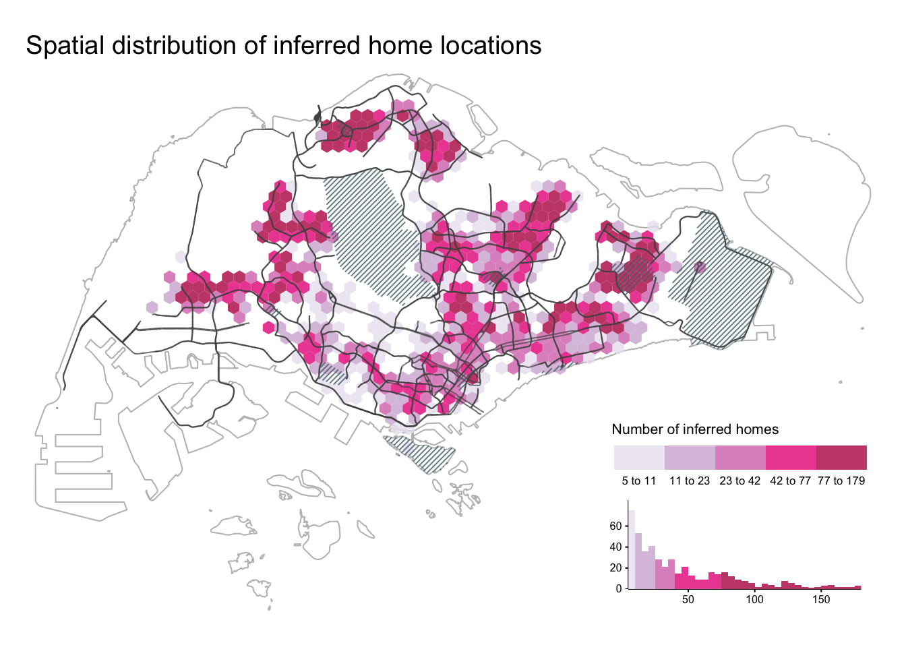
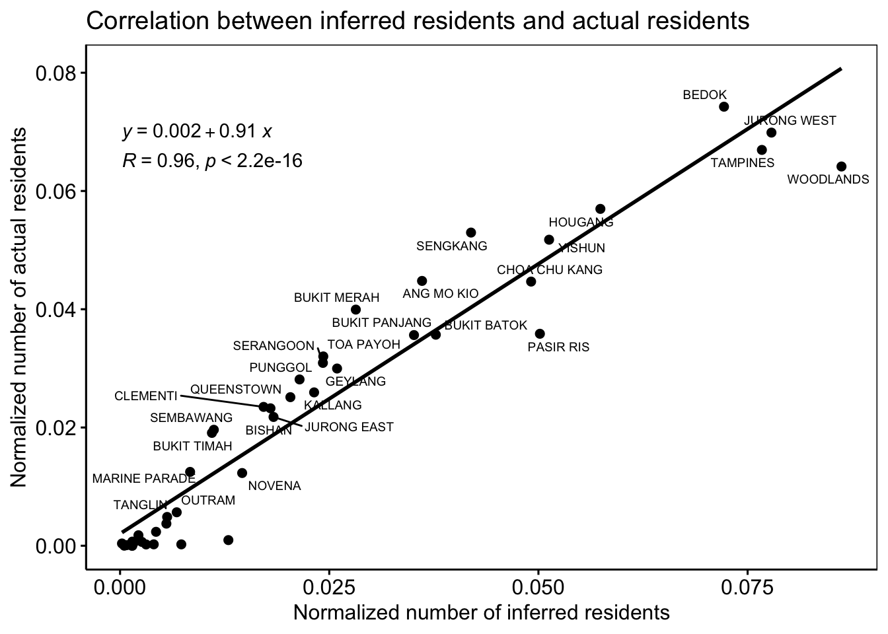

Last updated: 2021-05-25
Checks: 7 0
Knit directory: entangledfootprints/
This reproducible R Markdown analysis was created with workflowr (version 1.6.2). The Checks tab describes the reproducibility checks that were applied when the results were created. The Past versions tab lists the development history.
Great! Since the R Markdown file has been committed to the Git repository, you know the exact version of the code that produced these results.
Great job! The global environment was empty. Objects defined in the global environment can affect the analysis in your R Markdown file in unknown ways. For reproduciblity it’s best to always run the code in an empty environment.
The command set.seed(20210524) was run prior to running the code in the R Markdown file. Setting a seed ensures that any results that rely on randomness, e.g. subsampling or permutations, are reproducible.
Great job! Recording the operating system, R version, and package versions is critical for reproducibility.
Nice! There were no cached chunks for this analysis, so you can be confident that you successfully produced the results during this run.
Great job! Using relative paths to the files within your workflowr project makes it easier to run your code on other machines.
Great! You are using Git for version control. Tracking code development and connecting the code version to the results is critical for reproducibility.
The results in this page were generated with repository version edc3567. See the Past versions tab to see a history of the changes made to the R Markdown and HTML files.
Note that you need to be careful to ensure that all relevant files for the analysis have been committed to Git prior to generating the results (you can use wflow_publish or wflow_git_commit). workflowr only checks the R Markdown file, but you know if there are other scripts or data files that it depends on. Below is the status of the Git repository when the results were generated:
Ignored files:
Ignored: .DS_Store
Ignored: .Rproj.user/
Ignored: data/.DS_Store
Untracked files:
Untracked: analysis/bibliography.bib
Untracked: data/data/
Untracked: data/derived_data/
Untracked: data/photos/
Untracked: data/raw_data/
Unstaged changes:
Modified: README.md
Modified: analysis/_site.yml
Modified: analysis/index.Rmd
Note that any generated files, e.g. HTML, png, CSS, etc., are not included in this status report because it is ok for generated content to have uncommitted changes.
These are the previous versions of the repository in which changes were made to the R Markdown (analysis/004-identify-home-locations.Rmd) and HTML (docs/004-identify-home-locations.html) files. If you’ve configured a remote Git repository (see ?wflow_git_remote), click on the hyperlinks in the table below to view the files as they were in that past version.
| File | Version | Author | Date | Message |
|---|---|---|---|---|
| Rmd | edc3567 | chenqingqing | 2021-05-25 | feat: identify home locations |
To identify home locations for users from their spatio-temporal footprint, we use an ensemble approach proposed by Chen and Poorthuis (2021) in their paper named “Identifying Home Locations in Human Mobility Data: An Open-Source r Package for Comparison and Reproducibility”. The introduced open-source R package, homelocator, provides a consistent framework and interface for the adoption of different approaches to home location identification.
First, we need to install and load the homelocator package with:
install_github("spatialnetworkslab/homelocator")
library(homelocator)# grid cells
grids <- st_read(here("data/derived_data/spatial_hex_grid.shp"), quiet = T) %>%
st_transform(crs = 3414)# de-identified tweets
df <- read_csv(here("data/raw_data/deidentified_sg_tweets.csv")) %>% #load de-identified dataset
mutate(created_at = with_tz(created_at, tzone = "Asia/Singapore")) # the tweets were sent in Singapore, so must convert the timezone to SGT, the default timezone is UTC!
df_counts <- df %>%
group_by(u_id) %>%
nest() %>%
mutate(n_tweets = map_dbl(data, nrow),
n_locs = map_dbl(data, function(x) n_distinct(x$grid_id)))
df <- df_counts %>%
filter(n_tweets >= 10 & n_locs > 1) %>% # remove users with less than 10 tweets or only tweet at a single place
unnest(data) %>%
dplyr::select(-c(n_tweets, n_locs)) %>%
ungroup()The updated de-identified dataset is in analysis/data/derived_data.
saveRDS(df, file = here("data/derived_data/deidentified_sg_tweets_updated.rds"))Finally, we apply the four built-in recipes from homelocator package on the de-identified data set and only assign home location for users if four algorithms agree.
Recipe ‘APDM’ (Rein Ahas et al., 2010) calculates both the average and standard deviation timestamps in each location for each user.
#generate grid neighbors
st_queen <- function(a, b = a) st_relate(a, b, pattern = "F***T****")
neighbors <- st_queen(grids)
#convert list to tibble
list_to_tibble <- function(index, neighbors){
tibble(grid_id = as.character(index)) %>%
mutate(neighbor = list(neighbors[[index]]))
}
df_neighbors <- do.call(rbind, map(1:length(neighbors), function(x) list_to_tibble(x, neighbors)))
#recipe: APDM
hm_apdm <- homelocator::identify_location(df, user = "u_id", timestamp = "created_at", location = "grid_id",
tz = "Asia/Singapore", keep_score = F, recipe = "APDM")Recipe ‘FREQ’ simply selects the most frequently ‘visited’ location as users’ home locations.
hm_freq <- homelocator::identify_location(df, user = "u_id", timestamp = "created_at", location = "grid_id",
tz = "Asia/Singapore", show_n_loc = 1, recipe = "FREQ")Recipe ‘HMLC’ weighs data points across multiple time frames to ‘score’ potentially meaningful locations.
hm_hmlc <- homelocator::identify_location(df, user = "u_id", timestamp = "created_at", location = "grid_id",
tz = "Asia/Singapore", show_n_loc = 1, keep_score = F, recipe = "HMLC")Recipe ‘OSNA’ (Efstathiades et al., 2015), only considers data points sent on weekdays and divides a day into three time frames - ‘rest time,’ ‘leisure time’ and ‘active time.’ The algorithm finds the most ‘popular’ location during ‘rest’ and ‘leisure’ time as the home locations for users.
hm_osna <- homelocator::identify_location(df, user = "u_id", timestamp = "created_at", location = "grid_id",
tz = "Asia/Singapore", show_n_loc = 1, recipe = "OSNA")The identified homes are in data/derived_data.
write_csv(hm_apdm, path = here("data/derived_data/hm_apdm.csv"))
write_csv(hm_freq, path = here("data/derived_data/hm_freq.csv"))
write_csv(hm_hmlc, path = here("data/derived_data/hm_hmlc.csv"))
write_csv(hm_osna, path = here("data/derived_data/hm_osna.csv"))## find users with identified home locations that all four algorithms agree
qualified_uses <- hm_full %>%
group_by(u_id) %>%
dplyr::summarise(method = dplyr::n_distinct(name),
homes = dplyr::n_distinct(home)) %>%
filter(method == 4) %>% ## all four algorithms can find the home for the user
filter(homes == 1) ## all four algorithms find the SAME home for the user
identified_hms <- hm_full %>%
filter(u_id %in% qualified_uses$u_id) %>%
dplyr::select(-name) %>%
distinct(u_id, home, .keep_all = TRUE) The identified home locations are saved under data/derived_data/ directory.
write_csv(identified_hms, path = here("data/derived_data/identified_hms.csv"))identified_hms <- read_csv(here("data/derived_data/identified_hms.csv")) %>%
group_by(home) %>%
dplyr::summarise(n_users_home = n_distinct(u_id)) %>%
left_join(., grids, by = c("home" = "grid_id")) %>%
replace(., is.na(.), 0) %>%
st_as_sf() sg_boundary <- readRDS(here("data/derived_data/sg_boundary.rds"))
streets <- readRDS(here("data/derived_data/streets.rds"))
area_hatched <- readRDS(here("data/derived_data/area_hatched.rds"))
area_centers <- readRDS(here("data/derived_data/area_centers.rds"))
tm_shape(sg_boundary) +
tm_borders(col = "grey") +
tm_shape(identified_hms) +
tm_fill("n_users_home",
palette = "PuRd",
style = "quantile",
alpha = 0.8,
legend.is.portrait = F,
legend.format = list(digits = 0),
legend.hist = TRUE,
title = "Number of inferred homes") +
tm_shape(streets) +
tm_lines(col = rgb(80, 80, 80, maxColorValue = 255), lwd = 1, alpha = 0.8) +
tm_shape(area_hatched) +
tm_lines(col = rgb(80, 110, 120, maxColorValue = 255), alpha = 0.8) +
tm_layout(title.position = c("left", "top"),
title.size = 0.7,
main.title = "Spatial distribution of inferred home locations",
main.title.size = 1.2,
frame = F,
legend.position = c("right", "bottom"),
legend.bg.color = "white",
legend.width = 0.3,
legend.title.size = 0.8,
legend.text.size = 0.66,
legend.hist.height = 0.2,
legend.hist.width = 0.3,
legend.hist.size = 0.5)
[1] "#EAE4F1CC" "#D2B3D6CC" "#D677B9CC" "#E62887CC" "#B80A4ECC"#residents in Singapore 2015
pop2015 <- st_read(here("data/raw_data/PLAN_BDY_DWELLING_TYPE_2015.shp"), quiet = T) %>%
st_transform(., crs = 3414) %>%
st_make_valid()
inferred_residents <- pop2015 %>%
dplyr::select(PLN_AREA_N) %>%
st_join(identified_hms, ., largest = T) %>%
st_set_geometry(NULL) %>%
group_by(PLN_AREA_N) %>%
dplyr::summarise(n_inferred_residents = sum(n_users_home))
actual_residents <- pop2015 %>%
st_set_geometry(NULL) %>%
select(c(PLN_AREA_N, TOTAL))
norm_residents <- left_join(inferred_residents, actual_residents) %>%
mutate(norm_n_inferred_residents = n_inferred_residents/sum(n_inferred_residents),
norm_n_actual_residents = TOTAL/sum(TOTAL))
ggscatter(norm_residents, x = "norm_n_inferred_residents", y = "norm_n_actual_residents",
add = "reg.line") +
stat_cor(label.y = 0.065) +
stat_regline_equation(label.y = 0.07) +
ggrepel::geom_text_repel(aes(label=PLN_AREA_N), size = 2.5) +
theme(panel.background=element_rect(fill = "white", colour = "black"),
title = element_text(size = 12)) +
labs(x = "Normalized number of inferred residents",
y = "Normalized number of actual residents",
title = "Correlation between inferred residents and actual residents") 
sessionInfo()R version 4.0.4 (2021-02-15)
Platform: x86_64-apple-darwin17.0 (64-bit)
Running under: macOS Big Sur 10.16
Matrix products: default
BLAS: /Library/Frameworks/R.framework/Versions/4.0/Resources/lib/libRblas.dylib
LAPACK: /Library/Frameworks/R.framework/Versions/4.0/Resources/lib/libRlapack.dylib
locale:
[1] en_US.UTF-8/en_US.UTF-8/en_US.UTF-8/C/en_US.UTF-8/en_US.UTF-8
attached base packages:
[1] stats graphics grDevices utils datasets methods base
other attached packages:
[1] tmap_3.3-1 ggpubr_0.4.0 lubridate_1.7.10 here_1.0.1
[5] sf_0.9-7 forcats_0.5.1 stringr_1.4.0 dplyr_1.0.5
[9] purrr_0.3.4 readr_1.4.0 tidyr_1.1.3 tibble_3.1.0
[13] ggplot2_3.3.3 tidyverse_1.3.0
loaded via a namespace (and not attached):
[1] leafem_0.1.3 colorspace_2.0-0 ggsignif_0.6.0
[4] ellipsis_0.3.1 class_7.3-18 rio_0.5.16
[7] leaflet_2.0.4.1 rprojroot_2.0.2 base64enc_0.1-3
[10] fs_1.5.0 dichromat_2.0-0 rstudioapi_0.13
[13] farver_2.1.0 ggrepel_0.9.1 fansi_0.4.2
[16] xml2_1.3.2 splines_4.0.4 codetools_0.2-18
[19] knitr_1.31 polynom_1.4-0 jsonlite_1.7.2
[22] workflowr_1.6.2 tmaptools_3.1-1 broom_0.7.5
[25] dbplyr_2.1.0 png_0.1-7 compiler_4.0.4
[28] httr_1.4.2 backports_1.2.1 Matrix_1.3-2
[31] assertthat_0.2.1 cli_2.3.1 later_1.1.0.1
[34] htmltools_0.5.1.1 tools_4.0.4 gtable_0.3.0
[37] glue_1.4.2 Rcpp_1.0.6 carData_3.0-4
[40] cellranger_1.1.0 jquerylib_0.1.3 raster_3.4-5
[43] vctrs_0.3.6 nlme_3.1-152 leafsync_0.1.0
[46] crosstalk_1.1.1 lwgeom_0.2-5 xfun_0.21
[49] openxlsx_4.2.3 rvest_0.3.6 lifecycle_1.0.0
[52] rstatix_0.7.0 XML_3.99-0.5 scales_1.1.1
[55] hms_1.0.0 promises_1.2.0.1 parallel_4.0.4
[58] RColorBrewer_1.1-2 yaml_2.2.1 curl_4.3
[61] sass_0.3.1 stringi_1.5.3 highr_0.8
[64] e1071_1.7-4 zip_2.1.1 rlang_0.4.10
[67] pkgconfig_2.0.3 evaluate_0.14 lattice_0.20-41
[70] labeling_0.4.2 htmlwidgets_1.5.3 tidyselect_1.1.0
[73] magrittr_2.0.1 R6_2.5.0 generics_0.1.0
[76] DBI_1.1.1 mgcv_1.8-33 pillar_1.5.1
[79] haven_2.3.1 whisker_0.4 foreign_0.8-81
[82] withr_2.4.1 units_0.6-7 stars_0.5-1
[85] abind_1.4-5 sp_1.4-5 modelr_0.1.8
[88] crayon_1.4.1 car_3.0-10 KernSmooth_2.23-18
[91] utf8_1.1.4 rmarkdown_2.7 grid_4.0.4
[94] readxl_1.3.1 data.table_1.14.0 git2r_0.28.0
[97] reprex_1.0.0 digest_0.6.27 classInt_0.4-3
[100] httpuv_1.5.5 munsell_0.5.0 viridisLite_0.3.0
[103] bslib_0.2.4